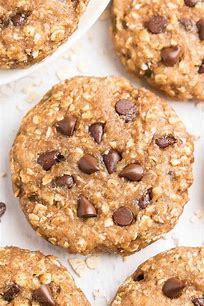

Peanut Butter Oatmeal Cookies

Description
This is my favorite cookie recipe. I can eat them anytime and they are
super simple to make
Ingredients
- 1-1/2 cup peanut Butter
- 3/4 cup butter
- 3/4 cup shortening
- 3-3/4 cup packed brown sugar
- 3 eggs
- 3 tsp vanilla
- 3 cups whole wheat flour
- 3 tsp baking powder
- 1-1/2 tsp salt
- 3 cups rolled oats
Instructions
- Mix ingredients together in large bowl
- Roll dough into ball and use fork to make a criss cross pattern
- bake at 350 degrees for approximately 14 minutes